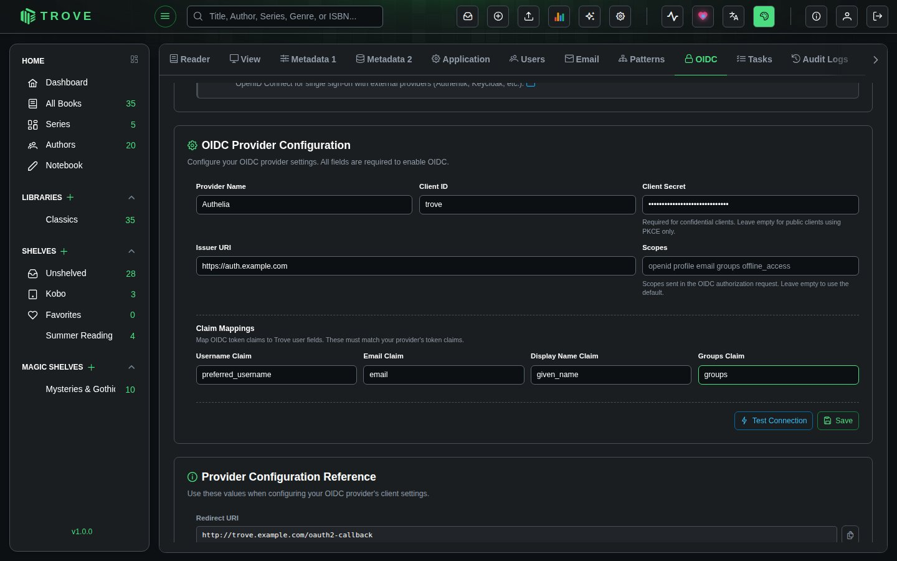
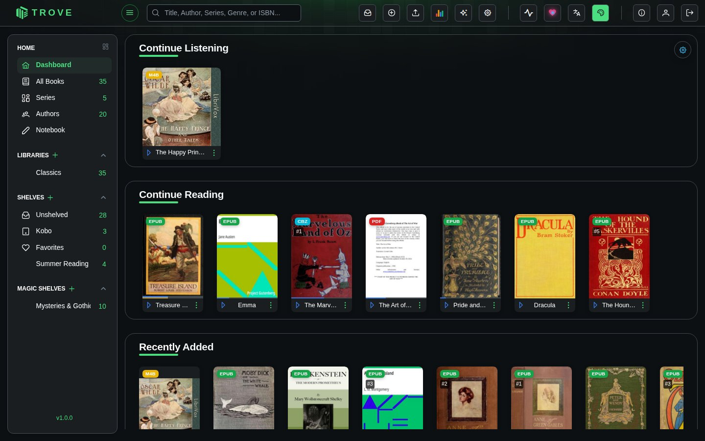

Authelia
Seamlessly integrate Authelia as your single sign-on (SSO) provider for Trove. Simplify user authentication, enhance security, and provide a streamlined login experience across your applications.
What You'll Achieve
With Authelia integration, you can:
- Enable single sign-on (SSO) for seamless access to Trove without separate login credentials
- Centralize user management across multiple applications from one unified interface
- Enhance security with OAuth2/OpenID Connect protocols and modern authentication standards
- Simplify login experience for your users with automatic session management
- Control access through OIDC client configuration and user permissions
- Streamline deployment with Authelia's lightweight and easy-to-configure architecture
How Authelia Integration Works
The Authentication Flow
Understanding the authentication flow helps troubleshoot issues and explains what happens behind the scenes:
-
🎫 User Initiates Login
User attempts to access Trove and is redirected to Authelia's secure login portal. The original destination URL is preserved for automatic redirect after authentication. -
🔑 Authelia Authenticates
User enters credentials in Authelia's login page. Authelia validates the credentials against its user directory and verifies the user's identity. -
✅ Token Exchange
Authelia validates credentials and issues OAuth2 tokens (access token, ID token). These tokens contain user information and are cryptographically signed for security. -
🚪 Access Granted
Trove receives and validates the tokens, extracts user information, matches it with an existing Trove user account, and grants access to the authenticated user.
Setting Up Authelia
Step 1: Create OIDC Client in Authelia
The essential parts of the Authelia config are highlighted below, and should be adapted to your specific setup.
example.com will need changing to your actual domain name.
It's also best practice to change the client_id parameter to a randomly generated string, the following restrictions apply:
Valid Client ID’s have the following characteristics:
- Less than or equal to 100 characters.
- Only contains RFC3986 Unreserved Characters.
- Completely unique from other configured clients.
identity_providers:
oidc:
lifespans:
access_token: 1h
authorize_code: 1m
id_token: 1h
refresh_token: 90m
enable_client_debug_messages: true
enforce_pkce: public_clients_only
cors:
endpoints:
- authorization
- pushed-authorization-request
- token
- revocation
- introspection
- userinfo
allowed_origins_from_client_redirect_uris: true
claims_policies:
legacy:
id_token: ['email', 'email_verified', 'preferred_username', 'name']
clients:
- client_id: trove
client_name: Trove
public: true
authorization_policy: two_factor
claims_policy: legacy
consent_mode: implicit
require_pkce: true
pkce_challenge_method: S256
scopes:
- offline_access
- openid
- profile
- email
redirect_uris:
- https://trove.example.com/oauth2-callback
- https://trove.example.com/*
response_types:
- code
grant_types:
- authorization_code
- refresh_tokenConfiguring Trove
Step 2: Connect Trove to Authelia
Now configure Trove to use Authelia as the authentication provider. This is the final configuration step:

-
Open Trove Settings
Go to Settings › OIDC in your Trove admin interface. You'll need administrator privileges to access this section. -
Configure OIDC Provider Enter the credentials you copied from Authelia:
- Provider Name:
Authelia(or your preferred display name)- This name appears on the login button, so make it recognizable to users
- Client ID: Paste the Client ID from Authelia (
trove)- Make sure there are no extra spaces before or after
- Issuer URI: Paste the OpenID Configuration Issuer URL from Authelia without a trailing slash
- Example:
https://auth.example.com
- Example:
- Username Claim:
preferred_username - Email Claim:
email - Display Name Claim:
name - Click Save to store the configuration
- Provider Name:
-
Enable OIDC Authentication
Under Login Methods, switch on OIDC Login to start using Authelia- When enabled, users will see a "Login with Authelia" button on the Trove login page
- The standard username/password login will still be available unless specifically disabled
Testing the Integration
Step 4: Test Login with Authelia
Verify that the integration works correctly before rolling it out to users. Testing ensures a smooth experience:
Open an incognito/private browser window
- Navigate to your Trove instance
- Click "Login with Authelia" (or your configured provider name)
- You'll be redirected to Authelia for authentication
- After logging in, you should be redirected back to Trove

Managing Authentication
Disabling Authelia Authentication
If you need to temporarily disable or switch authentication methods (for maintenance or troubleshooting):

-
Navigate to Authentication Settings
Go to Trove → Settings › OIDC -
Disable OIDC
Under Login Methods, switch off OIDC Login- This immediately disables Authelia authentication
- Active sessions remain valid until they expire
- New login attempts will use standard authentication
-
Log Out
Click Logout to end your current session and verify the change -
Standard Login Returns
You'll be redirected to the standard Trove login page with username/password fields

Troubleshooting
Common Issues and Solutions
Authentication Fails:
- ✓ Verify usernames match exactly between Authelia and Trove (case-sensitive)
- ✓ Check callback URLs DO NOT include trailing slashes
- ✓ Ensure user exists in both Authelia and Trove
- ✓ Verify Client ID is correctly copied (no extra spaces)
- ✓ Check browser console for errors (F12)
Redirect Errors:
- ✓ Verify callback URL:
/oauth2-callback(without trailing slash) - ✓ Confirm domain matches exactly in both systems
- ✓ Ensure HTTPS is used in production
- ✓ Validate wildcard pattern:
https://your-domain/*
User Not Found:
- ✓ Create matching username in Trove (case-sensitive)
- ✓ Verify user account is active in Authelia
- ✓ Check that email addresses match between systems
"Invalid Client" Error:
- ✓ Check Client ID is copied correctly (no extra spaces)
- ✓ Ensure Issuer URL DOES NOT have a trailing slash
Connection Refused:
- ✓ Verify Authelia service is running and accessible
- ✓ Check network connectivity between Trove and Authelia
- ✓ Ensure firewall rules allow communication
- ✓ Validate DNS resolution for both domains
SSL/Certificate Errors:
- ✓ Ensure valid SSL certificates on both systems
- ✓ Verify Issuer URL uses HTTPS in production
- ✓ Check certificate chains are properly configured
- ✓ Validate certificate expiration dates
Viewing Logs
Authelia: Check application logs for OAuth-related events and errors
Trove: Review authentication logs in the application logs directory
Best Practices
Security Recommendations
- 🔒 Use HTTPS - Always use HTTPS in production with valid SSL certificates
- 🔐 Secure Credentials - Store Client IDs securely and never expose them in public repositories
- 🛡️ Keep Updated - Regularly update both Authelia and Trove to patch security vulnerabilities
- 📊 Monitor Activity - Track login attempts and set up alerts for unusual patterns
- 🔑 Rotate Credentials - Periodically regenerate Client IDs, especially after personnel changes
- 🚪 Restrict Access - Configure callback URLs as specifically as possible
- 👥 Review Users - Regularly audit user accounts and remove inactive users
Optimization Tips
- 📝 Use descriptive names - Name OIDC clients clearly (e.g., "Trove Production")
- 🌐 Use reverse proxy - Add rate limiting and IP whitelisting for additional security
- 🔄 Test in staging - Validate changes in a staging environment before production
- ⚡ Optimize tokens - Configure appropriate token expiration times
- 📋 Document setup - Keep detailed records of your configuration for troubleshooting
User Experience
- 🎨 Customize branding - Configure Authelia with your organization's branding
- 📚 Document the process - Create user guides with screenshots and support contact info
- 🆘 Provide support - Ensure users know how to get help with authentication issues
- 🔄 Test regularly - Periodically verify the authentication flow works as expected
Additional Resources
- Authelia Documentation: Official documentation for Authelia configuration
- OAuth 2.0 Specification: Understanding the protocol behind SSO
- OpenID Connect Core: Detailed information about OIDC flows
- Security Best Practices: Regular security audits and penetration testing
Authelia is an open-source authentication and authorization server and portal fulfilling the identity and access management (IAM) role of information security in providing multi-factor authentication and single sign-on (SSO) for your applications via a web portal. Authelia is an OpenID Connect 1.0 Provider which is OpenID Certified™ allowing comprehensive integrations, and acts as a companion for common reverse proxies.